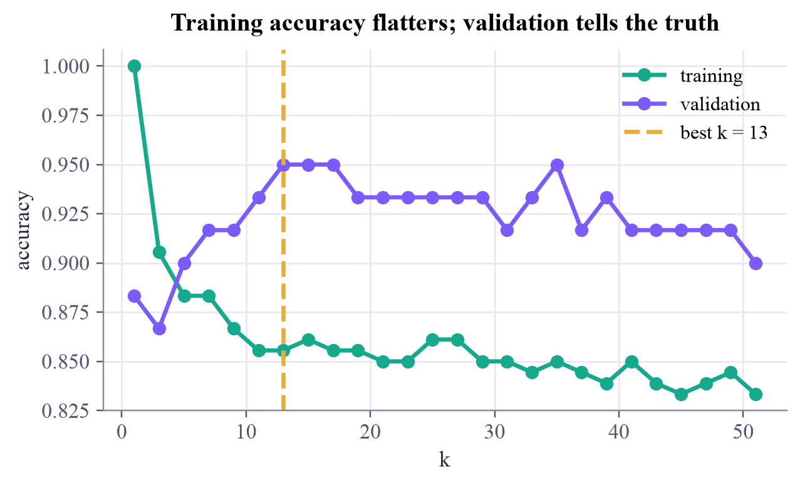

train 180 · validation 60 · test 60
Machine Learning
 about 11 min
about 11 min ml-w1d4.ipynb
ml-w1d4.ipynb
Train, validate, test
A model that memorized its training data can score 100% and still be useless. Hold some data back, and let it judge.
In this lesson you will
- Explain why accuracy on the training data can't be trusted
- Choose a knob like on a validation set, and use the test set only once
- Run k-fold cross-validation when data is scarce, and spot data leakage
Warm-up
1 minThe student who memorized the exam

A student memorizes last year's exam, answers included. On that exact exam they score 100%. On a new exam? Nobody knows. Yesterday, kNN with scored 100% on its own training points, which is exactly the same trick. Today you'll learn how to find out how good a model really is.
Big idea
4 minHold data back
What we care about is generalization: how well the model does on new data from the same source. To measure it, split the labeled data before learning anything:
- Training set: the model learns from it. kNN simply remembers it.
- Validation set: used to choose the knobs that learning doesn't set, called hyperparameters (like ).
- Test set: the final exam. Look at it once, at the very end, to report how well the chosen model does.
Every time you use a set to make a choice, its score stops being an honest estimate. So choose with validation, and report with test.
Two more ideas make this practical:
k-fold cross-validation
With little data, one validation set can be lucky or unlucky. Instead cut the data into folds; each fold takes one turn as the validation set while the rest train. Report the mean of the scores and their spread.
Data leakage
Any information from the test set that sneaks into training makes scores too good to be true. Classic example: standardizing with the mean of all the data. Compute it on the training set only, then apply it to the rest.
Play
3 minWatch the two scores
The model learns from the filled dots only. The rings are validation points it never saw; a ring with a dot in its middle is one it gets wrong. Slide and watch both scores.
Try this
Start at : the training score is perfect, the validation score is not. Find the best , then press Reshuffle the split a few times. The best moves around, which is exactly why cross-validation exists:
Code
2 minSplits and cross-validation in scikit-learn
The notebook for this lessonEvery code cell below, with what it printed, is in
ml-w1d4.ipynb. To change the code and run it yourself, open the notebook in Google Colab (free, in your browser) or download it for your own Jupyter.import numpy as np
from sklearn.datasets import make_moons
from sklearn.model_selection import train_test_split
X, y = make_moons(n_samples=300, noise=0.35, random_state=1)
# first lock away the test set (20%), then cut the rest into training (60%) and validation (20%)
X_rest, X_test, y_rest, y_test = train_test_split(X, y, test_size=0.2, random_state=0, stratify=y)
X_train, X_val, y_train, y_val = train_test_split(X_rest, y_rest, test_size=0.25, random_state=0, stratify=y_rest)
print(f"train {len(X_train)} · validation {len(X_val)} · test {len(X_test)}")What it printed in the notebook
import matplotlib.pyplot as plt
from sklearn.neighbors import KNeighborsClassifier
ks = list(range(1, 52, 2))
train_acc, val_acc = [], []
for k in ks:
model = KNeighborsClassifier(n_neighbors=k).fit(X_train, y_train)
train_acc.append(model.score(X_train, y_train))
val_acc.append(model.score(X_val, y_val))
best = ks[int(np.argmax(val_acc))]
print(f"best k on validation: {best} (validation accuracy {max(val_acc):.1%})")
plt.figure(figsize=(6.4, 3.4))
plt.plot(ks, train_acc, "o-", color="#17a98c", label="training")
plt.plot(ks, val_acc, "o-", color="#7b5cfa", label="validation")
plt.axvline(best, color="#f0ac2e", ls="--", label=f"best k = {best}")
plt.xlabel("k")
plt.ylabel("accuracy")
plt.legend()
plt.title("Training accuracy flatters; validation tells the truth")
plt.show()What it printed in the notebook
best k on validation: 13 (validation accuracy 95.0%)

Now, and only now, the test set:
final = KNeighborsClassifier(n_neighbors=best).fit(X_rest, y_rest)
print(f"test accuracy with k = {best}: {final.score(X_test, y_test):.1%}")What it printed in the notebook
test accuracy with k = 13: 86.7%
Notice that the test score is lower than the best validation score. That's normal: we picked the best of 26 values of on the validation set, and part of that "best" was luck. The test set, untouched until now, gives the honest number.
from sklearn.model_selection import cross_val_score
for k in [1, best, 51]:
scores = cross_val_score(KNeighborsClassifier(n_neighbors=k), X_rest, y_rest, cv=5)
print(f"k = {k:2d}: folds {np.round(scores, 2)} -> {scores.mean():.1%} ± {scores.std():.1%}")What it printed in the notebook
k = 1: folds [0.75 0.81 0.85 0.9 0.88] -> 83.8% ± 5.2% k = 13: folds [0.83 0.83 0.92 0.88 0.9 ] -> 87.1% ± 3.3% k = 51: folds [0.77 0.85 0.92 0.88 0.92] -> 86.7% ± 5.4%
Your turn
3 minYour turn: noisier data, bigger k?
Write best_k(noise): make moons with that much noise, split them, scan and return the with the best validation accuracy. Run it for noise = 0.1, 0.3, 0.5. What pattern do you expect, and what do you get?
def best_k(noise, seed=0):
X, y = make_moons(n_samples=300, noise=noise, random_state=seed)
X_tr, X_va, y_tr, y_va = train_test_split(X, y, test_size=0.3, random_state=seed, stratify=y)
# TODO: try k = 1, 3, 5, ..., 51 and return the one with the best validation accuracy
return 1
for noise in [0.1, 0.3, 0.5]:
print(f"noise {noise}: best k = {best_k(noise)}")Need a hint?
Copy the loop from cell 2 into the function. Noisy data has more "wrong-looking" points near the boundary; a larger outvotes them.
Show a solution
def best_k(noise, seed=0):
X, y = make_moons(n_samples=300, noise=noise, random_state=seed)
X_tr, X_va, y_tr, y_va = train_test_split(X, y, test_size=0.3, random_state=seed, stratify=y)
ks = range(1, 52, 2)
scores = [KNeighborsClassifier(n_neighbors=k).fit(X_tr, y_tr).score(X_va, y_va) for k in ks]
return list(ks)[int(np.argmax(scores))]
# one split can be lucky, so look at 10 different splits for each noise level
for noise in [0.1, 0.3, 0.5]:
picks = [best_k(noise, seed) for seed in range(10)]
print(f"noise {noise}: best k over 10 splits = {picks} (median {int(np.median(picks))})")What it printed in the notebook
noise 0.1: best k over 10 splits = [1, 1, 1, 1, 1, 1, 1, 1, 1, 1] (median 1) noise 0.3: best k over 10 splits = [3, 17, 33, 15, 21, 17, 7, 7, 33, 7] (median 16) noise 0.5: best k over 10 splits = [13, 45, 33, 47, 11, 17, 25, 9, 23, 19] (median 21)
Check yourself
2 minQuick check
Question 1 of 4
kNN with scores 100% on its training data. What does that tell you about new data?
Question 2 of 4
You try 20 values of and keep the one with the best test accuracy. What's wrong?
Question 3 of 4
In 5-fold cross-validation, how many times is each example used for validation?
Question 4 of 4
You standardize all features with the mean and spread of the whole dataset, then split. What's the problem?
Wrap-up
1 minToday in one sentence
Quantum link
Quantum machine learning experiments often use tiny datasets, because simulating qubits is slow. With 40 examples, one lucky split can make a quantum model look brilliant. Careful QML benchmarks, like the ones in Sara's group, use cross-validation and report the spread, not just one number.
Go deeper (optional)
ISLP chapter 5.1 compares the validation-set approach, leave-one-out and -fold cross-validation, with pictures of how much the estimates wobble.
Next in Machine Learning: accuracy is not the only score, and sometimes it is a very misleading one.

That's the lesson!
Tap the button to save it. Short and steady wins.
Marked by mistake? Undo